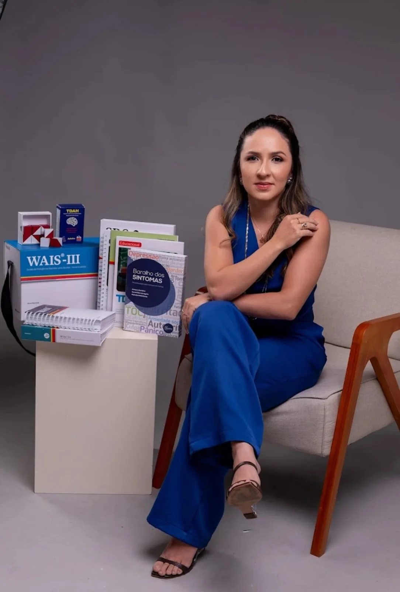
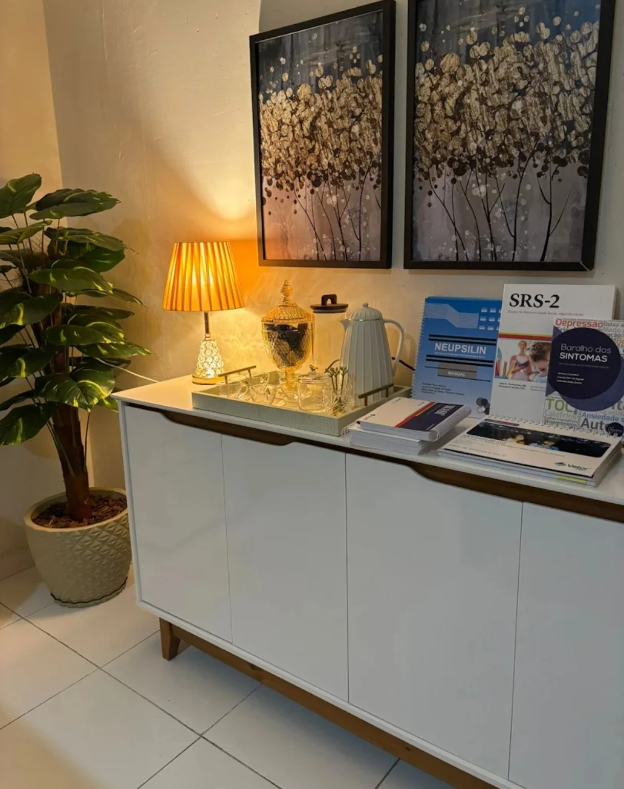
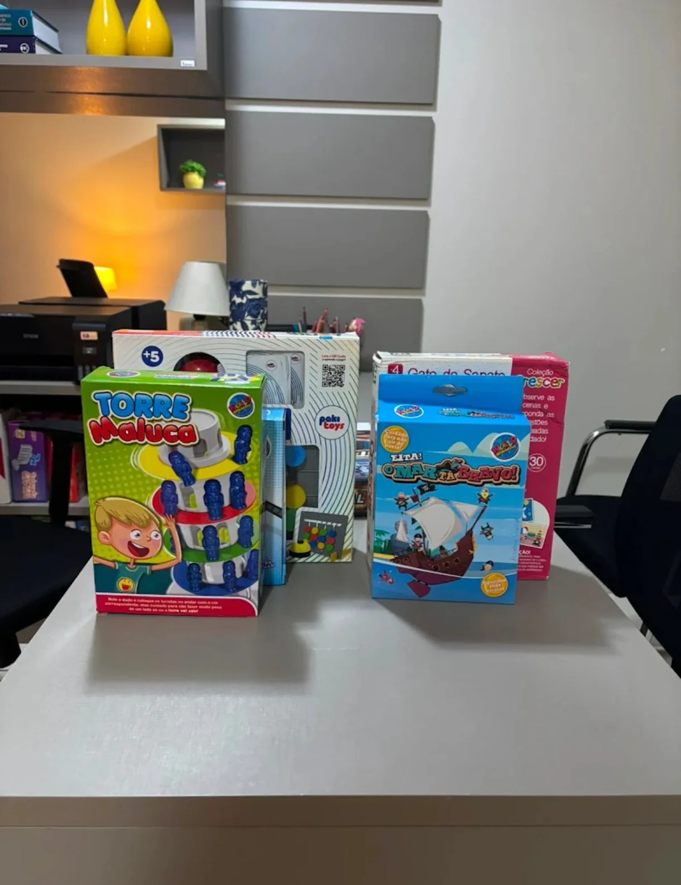

Psicologia
Atendimento psicológico com escuta profissional, ética e sigilo. Cada processo começa por entender a história e o momento de quem chega.
Atendimento psicológico e avaliação neuropsicológica em consultório na West Clinical, no bairro Doze Anos, em Mossoró.
Atendimento psicológico e avaliação neuropsicológica em consultório na West Clinical, no bairro Doze Anos, em Mossoró.
Atendimento psicológico com escuta profissional, ética e sigilo. Cada processo começa por entender a história e o momento de quem chega.
A avaliação neuropsicológica investiga funções como atenção, memória e linguagem, com entrevistas, observação e instrumentos padronizados.
Não existe atendimento igual para todos. A forma de acompanhar cada pessoa é conversada diretamente com a profissional.

Raquel Lopes é psicóloga e neuropsicóloga e atende em Mossoró (RN), na West Clinical, sala 302, no bairro Doze Anos.
Cuidar da saúde mental começa com uma conversa. Para saber como funciona o atendimento, para quem a avaliação é indicada e quais horários estão disponíveis, o melhor caminho é falar diretamente com ela.
Pelo WhatsApp (84) 99609-0800. O botão do site abre a conversa com uma mensagem pronta.
WhatsAppPergunte sobre o atendimento psicológico, a avaliação neuropsicológica e a disponibilidade de horários.
Conversa inicialDia, horário e os demais detalhes são combinados diretamente com a Raquel.
AgendamentoWest Clinical, sala 302, 3º andar. Rua Duodécimo Rosado, 337, Doze Anos, Mossoró.
ConsultórioAlgumas emoções e mudanças podem afetar a forma como você se sente, pensa e se relaciona. Buscar apoio psicológico ajuda a compreender o que está acontecendo.
Alguns motivos para procurar acompanhamento:
 01/03
01/03
Materiais usados na avaliação neuropsicológica.

02/03Luz quente e um espaço tranquilo na West Clinical.

03/03Recursos que ficam no consultório.
Acompanhe a Raquel nas redes e fale com ela pelo canal que preferir.
Você pode agendar pelo WhatsApp (84) 99609-0800:
Agende sua consultaRua Duodécimo Rosado, 337, West Clinical, sala 302, 3º andar, bairro Doze Anos, Mossoró (RN).
Ver rota no Google MapsRaquel atua em psicologia e em neuropsicologia. Para saber qual atendimento se aplica à sua necessidade e para quem é indicado, envie uma mensagem para ela.
Valores, formas de pagamento e horários disponíveis não são publicados no site. Essas informações são passadas pelo WhatsApp.
Essa informação não está publicada no site. Pergunte diretamente à Raquel pelo WhatsApp.
Não. Ele responde dúvidas gerais sobre contato, localização e áreas de atuação, sem diagnóstico nem orientação clínica. Em caso de crise, ligue para o CVV no 188.
Respostas automáticas. Não envie dados pessoais ou de saúde por aqui. Em crise, ligue 188 (CVV).